АСИНХРОН МАШИНАЛАР
Режа:
1. Асинхрон двигателнинг тузилиши.
2. Асинхрон двигателнинг ишлаш принципи.
3. Уч фазали ток системаси ёрдамида айланувчи магнит майдонининг ҳосил бўлиши.
4. Асинхрон двигателнинг энергетик диаграммаси ва фойдали иш коэффициенти.
Асинхрон машина узгарувчан ток машинаси ҳисбланади.
Асинхрон машиналар ҳам генератор, ҳам двигатель сифатида ишлатилиши мумкин.
Уч фазали асинхрон двигателлар металл кесиш, ёғочни қайта ишлаш дастгоҳларини, кўтарма кранлар, лифтлар,
эскалаторлар, вентиляторлар, насослар ва бошка механизмларни ҳаракатга келтиришда ишлатилади.

Барча электр машиналари каби асинхрон двигателлар ҳам: икки асосий кисм; қўзғалмас қисм статор ва
айланувчи ротордан иборат.
Статор станина, пўлат ўзак ва статорнинг пазларига жойлаштирилган уч фазали чўлгамлардан иборат.
Станина
чуяндан ёки алюминийдан цилиндрсмон шаклда ясалган бўлиб, унинг ичига статорнинг пўлат ўзаги
маҳкамланади.
Шунингдек, Асинхрон двигатель ишлаётганида уни совитиш мақсадида станина қовирғали қилиб ясалади
ҳамда
машинани ташқи механик таъсирлардан сақлаш учун ҳам хизмат қилади. Станинада статор чўлғамларини электр
энергия манбаига улаш учун шу чўлгамларнинг учлари чиқарилган „клеммалар қутичаси” бор. Чўяндан қуйилган
станинали электр машиналар кўтариш учун мўлжалланган винтли илгакка эга бўлади.
Статорнинг цилиндрсимон пўлат ўзаги қалинлиги 0,35 ёки 0,5 мм ли, ўзаро махсус ток билан
изоляцияланган
электротехник пўлат пластиналар тўпламидан иборат. Статор пўлат ўзагининг ички сиртида статор узунлиги
бўйича кетган пазларга статор чулгамлари жойлаштирилган.
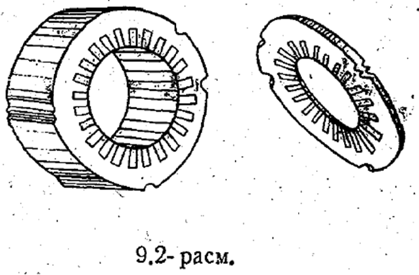
Статор чулғами изоляцияланган мис симлардан ясалган бўлиб, статор пазларига 2п/3 бурчак остида
жойлаштирилади.
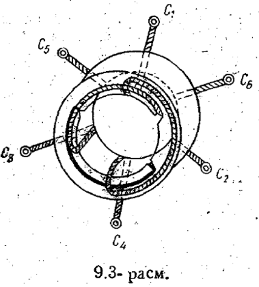
Чулғамларнинг бош ва охирги учлари юқорида айтилгандек, „клеммалар қутичасига“ чиқарилган бўлади. 9,4-
расм, а—в да чулғамларнинг уланиши кўрсатилган. Чулғам учларининг очиқ қолдирилиши уни тармоқ
кучланишининг қийматига қараб „юлдуз“ ёки „учбурчак" схемада улашга имкон беради.
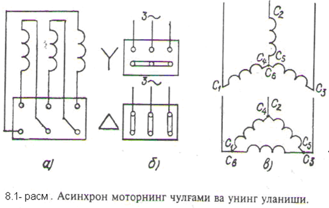
Ротор двигателнинг айланиш ўқига маҳкамланган бўлиб унинг пўлат ўзаги ҳам статорники каби қалинлиги 0,35
ёки 0,5 мм ли электротехник пўлат пластиналар тўпламадан иборат. Пўлат ўзак пластиналирининг устки
юзасида пазлар ўйилган бўлиб уларнинг конфигурацияси турлича бўлишн мумкин.
Пўлат ўзак двигателнинг ўқига маҳкамланади. Пўлат ўзак пластинкаларидаги пазлар ротор ариқчаларини
ташкил этиб, унга ротор чулғамлари жойлаштирилади. Асинхрон двигателлар ротор чулғамларининг тузилишига
қараб иккига бўлинади, двигателнинг номига эса шу чулғам номи қўшиб айтилади.
Асинхрон двигателлар ротор чулғамларининг тузилишига қараб иккига бўлинади, двигателнинг номига эса
шу чулғам номи қўшиб айтилади.
чулғамлари, қисқа туташтирилган ротор бундай двигатель эса қисқа туташтирилган асинхрон двигатель
фаза чулғамли ротор, бундай двигатель эса фаза роторли асинхрон двигатель
Доливо-Добровольский биринчи бўлиб қисқа туташишли роторли асинхрон роторларни тадқиқ этган бўлиб у
шунга амин бўлдики бундай типдаги асинхрон двигателлар қуйидаги жуда жиддий камчиликка эга бўлар экан
яъни пусковой моменти чеклангандир.
Агар пўлат ўзак ариқчаларига алюминийдан ясалган стерженлар жойлаштирилиб, уларнинг учлари алюминий
ҳалқалар билан бириктирилса, бундай ротор чулғамлари, қисқа туташтирилган ротор дейилади
Бундай двигатель эса қисқа туташтирилган роторли асинхрон двигатель деб номланади. Иссиқ шароитларда
ишлатиладиган двигателларнинг совитилишини яхшилаш мақсадида ротор ўқига шамоллатиш парракчалари
ўрнатилади. Куввати 100 кВт гача бўлган қисқа туташтирилган роторли асинхрон двигателларнинг ротор
.(чулғамлари) стерженлари алюминийдан қуйиб тайёрланади. Ротор :стерженлари (чулғамлари) узаксиз ҳолда
„олмахон гилдираги” кўринишига эга.
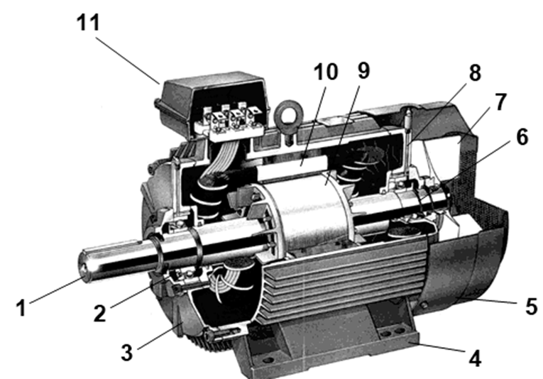
Бу ерда: 1 - вал, 2,6 - подшипниклар, 3,8 – подшипник шитлари, 4 - куракчалар 5 – вентилятор кожухи, 7 –
вентилятор қанотлари, 9 – қисқа туташишли ротор, 10 - статор, 11 – қириш қутиси.
Агар роторнинг пўлат ўзаги ариқчаларига, статор чулғамлари каби, мисдан ясалган уч фазали чулғам
жойлаштирилса, бундай ротор фаза чулғамли ротор, бундай двигатель эса фаза роторли асинхрон двигатель
деб аталади
Ротор чулғами „юлдуз“ схемада уланиб, чулғамнинг бош учлари асинхрон двигателнинг ўқига маҳкамланган
контакт ҳалкалар билан туташтирилади
Юргизиш реостати Rюр двигатель ишлаганда ротор чулғамининг қаршилигини ва шу билан биргаликда ротор
токини бошқариш учун хизмат қилади.
Асинхронный двигатель с фазным ротором (рис. 258 и 259) применяют для привода таких машин и
механизмов,
которые пускаются в ход под нагрузкой (краны, лифты и пр.). В подобных приводах двигатель должен
развивать при пуске максимальный момент, что достигается с помощью пускового реостата (см. § 80).
В двигателе с фазным ротором статор выполнен так же, как и в двигателе с короткозамкнутым ротором. На
роторе же расположена трехфазная обмотка, состоящая из трех, шести, девяти и т. д. катушек (в
зависимости от числа полюсов машины), сдвинутых одна относительно другой на 120° (в двухполюсной
машине), 60° (в четырехполюсной) и т. д. Числа полюсов обмоток статора и ротора берутся одинаковыми.
Статорда n1, тезлик билан айланаётган айланувчан магнит майдонининг оқими Ф1, ротор чулғамларини
кесиб ўтиб, электромагнит индукция қонунига асосан, ротор чулғамларида ЭЮК индукциялайди. ЭЮК, ўз
навбатида, ротор токини хосил қилади.
айланувчан магнит майдонининг ўқ чизиғида жойлашган ротор чўлғамидаги токнинг йўналиши кўрсатилган.
Ротор токи, ўз навбатида, ротор чулғами атрофида Ф2 магнит оқимини хосил қилади. Ротор чулғаминйнг
магнит оқими Ф2 статорнинг магнит оқими Ф1, га қўшилиб, двигателнинг умумий магнит майдони оқимини ҳосил
қилади. Натижада деформацияланган магнит майдонида жойлашган ротор чўлғамларига F жуфт куч таъсир эта
бошлайди.
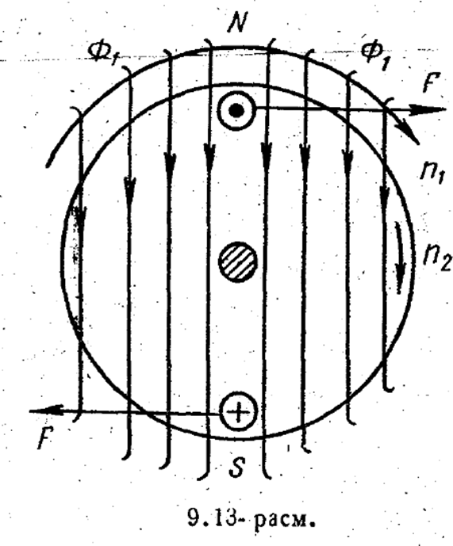
Шундай қилиб, шимолий N қутб остида жойлашган барча ўтказгичларга таъсир этувчи кучнинг йуналиши,
жанубий S кутб остида жойлашган ўтказгичларга таъсир этувчи куч йуналишига карама-карши бўлиб, жуфт куч
юзага келади. Мазкур жуфт куч таъсирида ротор n2 тезликда, айланувчан магнит майдонининг айланиш
йуналишида айлана бошлайди. Аммо роторнинг айланиш тезлиги n2 статорнинг айланувчан магнит майдонининг
айланиш тезлигидан кичик бўлади
Агар статор магнит майдонининг айланиш тезлиги ва роторнинг айланиш тезлиги ўзаро тенглашди (n1=n2)
десак, у холда айланувчан магнит майдонининг куч чизиқлари ротор чўлғамларини кесиб ўтмайди ва натижада
роторда ЭЮК индукцияланмайди. Бунда ротор токи i2 ва куч F нолга тенг бўлади. Бундай шароитда ротор
инерцияси буйича харакатни давом эттириб, подшипникларидаги ва хаво билан ишқаланиш туфайли роторнинг
тезлиги кичикрок, яъни n2< n1 бўлади. Айланувчан магнит майдони тезлигининг роторнинг айланиш тезлигига
тенг бўлмаслиги туфайли (n2< n1) бундай электр машиналар асинхрон (тезликлари бир хил эмас)
машиналар деб номланган. Pоторнинг сирпаниши ва айланиш тезлиги. Ротор айланиш тезлигининг статор
магнит майдонининг айланиш тезлигидан орқада қoлиши роторнинг сирпаниши, дейилади. у S ҳарфи билан
белгиланиб, қуйидагича ифодаланади:
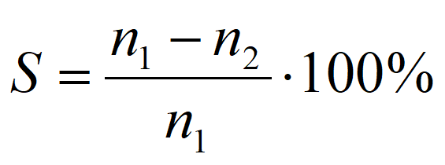
(1) ифодадан двигатель роторининг айланиш тезлиги n2=n1(1-S) ни аниқлаш мумкин. Тезликлар фарқига
роторнинг сирпаниш тезлиги дейилиб, қуйидагича ифодаланади:
ns = n1 – n2.
Двигателнинг ишлаш жараёнида сирпаниш қиймати 0 дан, 1 гача ўзгаради, двигагелни ишга тушириш
пайтида роторнинг айланиш тезлиги n2=0 бўлгани учун S=1 бўлади.
Двигателларнинг номинал сирпаниши Sном=0,03-0,06 қийматни ёки (3--6)% ни ташкил
этади. Агар
двигателнинг номинал айланиш тезлиги берилган бўлса, сирпанишнинг қиймати бўйича айланувчан магнит
майдонининг тезлигини топиш мумкин.
Бошка электр машиналардаги каби асинхрон двигателларда хам электр энергиясининг механик
энергияга айлантирилиши энергия исрофи билан боглик.
Двигателга электр тармоғидан берилаётган қувватнинг қандай тақсимланиши юқоридаги асинхрон
двигателнинг энергетик диаграммасида курсатилган.
Асинхрон двигателга тармокдан берилаётган кувват
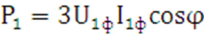
Кувватнинг колган кисми магнит окими ёрдамида роторга узатилади ва шу сабабли электромагнит кувват
деб аталади:
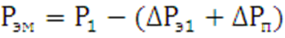
Электромагнит кувватнинг бир кисми ротор чулгамидаги электр кувват исрофларини коплашга сарфланади:
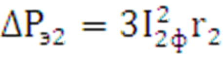
Электромагнит кувватнинг бир кисми ротор чулгамидаги электр кувват исрофларини коплашга сарфланади:
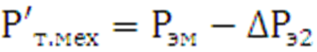
Электромагнит кувватнинг колган кисми двигателнинг механик кувватига айланади ва тула механик кувват
дейилади:
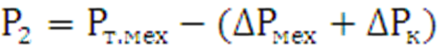
Двигателдаги механик исрофлар подшипниклардаги ишкаланишлар, айланувчан кисмларнинг хавога
ишкаланиши ва чуткаларнинг халкаларга ишкаланишидан (фаза роторли двигателларда) хосил булади.